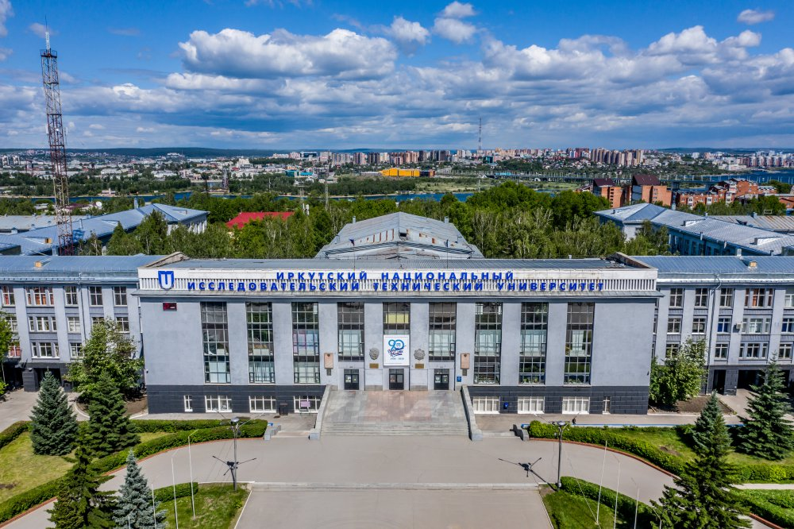
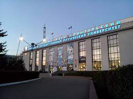
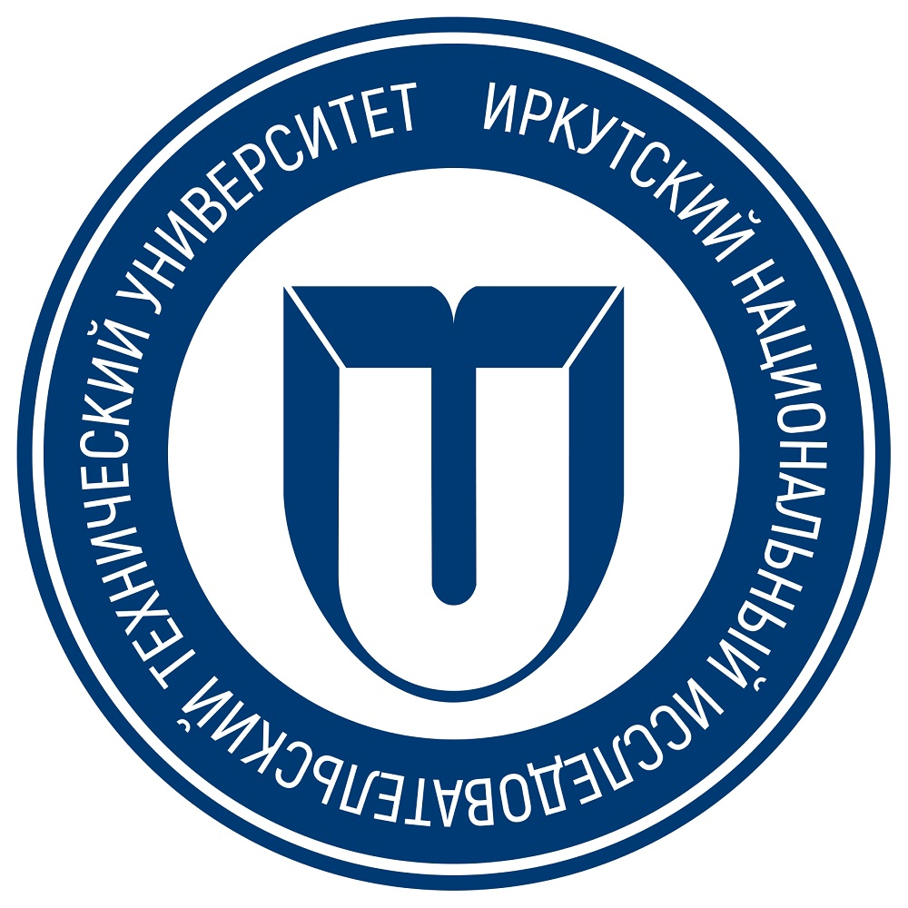
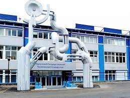

Описание программы
Направление «Информатика и вычислительная техника» относится к одному из направлений
современных информационных технологий. Оно совмещает в себе знания из нескольких
областей: программирование, современные сетевые технологии, современные информационные
вычислительные системы и микропроцессорная техника.
Студенты данного направления изучают строение и архитектуру компьютеров,
операционных систем, а также осваивают основные языки программирования, учатся анализировать
и прогнозировать потоки информации, создавать поисковые системы, сети хранения, обработки и передачи информации.
Кем работают выпускники
- Инженер-программист
- Devops-инженер
- Системный администратор
- Веб-программист
- Data Scientist
- Android/iOS-разработчик
- Руководитель IT проектов
- Инженер-программист
Возможные места прохождения производственной практики
- ISPsystem
- КРОК
- En+
- Yandex
- ИАЗ
- Rkit
- 1PS.ru
Красивые картинки Политеха
- 
- 
- 
- 